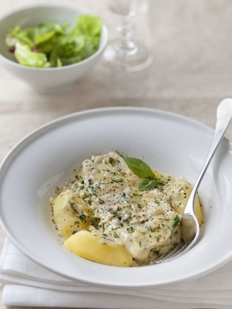

Cabillaud sauce basilic
Ingrédients
2×
- 1 échalote
- 10 cl de vin blanc
- 10 cl de crème fraîche
- 30 g de beurre
- basilic
- sel
- poivre
- 2 dos de cabillaud

Préparation
Étape 1
Émincer 1 échalote et la laisser mijoter 2 à 3min dans une casserole avec 10 cl de vin blanc.
Étape 2
Ajouter 10 cl de crème fraîche et bouillir 4min. Ajouter 30 g de beurre, puis une fois fondu, du basilic, du sel et du poivre. Garder au chaud.
Étape 3
Dorer 2 dos de cabillaud dans une poêle avec un peu de beurre. Servir nappé de sauce.
Résumé
1 échalote
10 cl de vin blanc
Émincer laisser mijoter
10 cl de crème fraîche
30 g de beurre
basilic
sel
poivre
bouillir
2 dos de cabillaud
Dorer